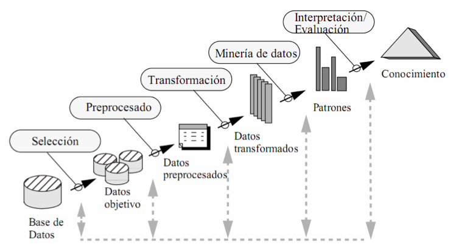
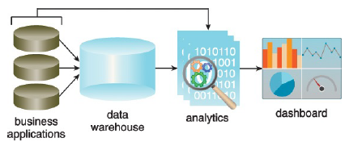

1 Minería de Datos
1.1 Motivación para la Minería de datos
- (Variedad) Los métodos de recolección de datos han evolucionado muy rápidamente.
- (Volumen) Las bases de datos han crecido exponencialmente
- (Usuarios) Estos datos contienen información útil para las empresas, países, etc.
- (Tecnología) El tamaño hace que la inspección manual sea casi imposible
- (Método) Se requieren métodos de análisis de datos automáticos para optimizar el uso de estos enormes conjuntos de datos
1.2 ¿Qué es la minería de datos?
Es el análisis de conjuntos de datos (a menudo grandes) para encontrar relaciones insospechadas (conocimiento) y resumir los datos de formas novedosas que sean comprensibles y útiles para el propietario/usuario de los datos.
Principles of Data Mining (Hand et.al. 2001)
1.3 Datos y conocimiento (Insumo/Resultado)
1.3.1 Datos:
- se refieren a instancias únicas y primitivas (objetos elementales, personas, eventos, puntos en el tiempo, etc.)
- describir propiedades individuales
- a menudo son fáciles de recolectar u obtener (por ejemplo, cajeros de escáner, internet, etc.)
- no nos permiten hacer predicciones o pronósticos
Ejercicio 1
Elija un sector/área y describa los potenciales datos que se tienen disponibles
1.3.2 Conocimiento:
- (Características) se refiere a clases de instancias (conjuntos de …)
- (Forma) describe patrones generales, estructuras, leyes,
- (Declaración) consta de la menor cantidad de declaraciones posibles
- (Proceso) a menudo es difícil y lleva mucho tiempo encontrar u obtener
- (Acciones) nos permite hacer predicciones y pronósticos
Ejercicio 2
Identifique potenciales conocimientos que se pueden explorar de las respuestas del ejercicio anterior
1.4 Requerimientos
- Disponibilidad para aprender
- Mucha paciencia
- Interactúa con otras áreas
- Pre procesamiento de datos
- Creatividad
- Rigor, prueba y error
1.5 knowledge discovery in databases (KDD)

- Problema (pregunta de investigación)
- Recopilación de la fuente de datos
- Base de datos
- Selección
- Datos objetivos
- Pre procesado
- Datos pre procesados
- Transformación
- Datos transformados
- Minería de datos
- Patrones
- Interpretación/evaluación
- Conocimiento
- Visualización de datos
- Reporte
1.6 Tipos de datos
- Estructurados (tabla): Tiene la forma de una tabla, donde las filas hacen referencia a observaciones y las columnas a atributos/variables.
- No estructurados (no tabla): Normalmente se refiere a archivos de audio, imágenes, documentos, etc.
- Semi estructurados (XML, JSON, Sensor): Son objetos que presentan una estructura que puede ser transformada a algo estructurado.
1.6.1 Almacenes de datos
- ETL: Extraer, transformar, guardar. El resultado es una base de datos transformada.
- ELT: Extraer, guardar, transformar: Se cuenta con una base de datos bruta/original, normalmente este enfoque consume más espacio.
1.6.2 Captura y preservación
Se refiere al proceso de obtener la información de las distintas fuentes posibles y luego pasar a un proceso de preservación.
1.6.2.1 Fuentes convencionales
Estas están basadas en la información que se distribuye de forma tradicional mediante bases de datos estructuradas, normalmente estas las distribuyen instituciones con amplios conocimientos en la gestión de bases de datos, para el caso de Bolivia se puede citar algunas:
Instituto Nacional de Estadística
SNIS
UDAPE
Geoboliva
Ministerios …
Censos
Encuestas
Registros administrativos
1.6.2.2 Datos web y APIs
Se refiere a la captura y uso de la información que se genera en espacios digitales, web, redes sociales, etc.
Las APIs son puertas de entrada creadas por los administradores de una página, que permiten el acceso a información seleccionada en formatos amigables.
1.6.2.3 Record Linkage (enlaces/llaves)
Se refiere al proceso de concatenar o unir observaciones dispuestas en múltiples bases de datos.
- Puede ser usado para compensar la falta de información
- Se usa para crear estudios longitudinales
- Se pueden armar seudo-paneles
Esto permite mejorar la cobertura (append), ampliar las temáticas de estudio (merge).

- Matching: Une información a partir de una clave, existen muchos problemas con claves tipo texto.
- Aproximaciones a reglas para hacer math: Definir criterios para posibilitar el match basados en reglas, distancias cercanas, etc.
- Match basados en probabilidad: Fellegi–Sunter method

Ejemplos:
- Pseudo-paneles: Cortes(años de nacimiento)
- Unidades educativas: RUE
- Municipios: Código de 6 dígitos, - 020101 La Paz
- 020105 El Alto
- EH: folio, UPM
- Clasificadores: Actividades económicas, productos.
1.6.2.4 Bases de datos
Una vez que los datos fueron recolectados y enlazados entre diferentes fuentes, es necesario guardar la información. Ahora se discute las alternativas para guardar la información.
- DBMS (databasemanagement systems) Sistema de gestión de base de datos: Decidir que herramienta usar según la dimensión de los archivos.
 * Bases de datos espaciales
* Múltiples formatos: https://juliael.carto.com/
* Bases de datos espaciales
* Múltiples formatos: https://juliael.carto.com/
- Censos
- Población y vivienda: 2012 (x), 2001 (x), 1992 (x), 1976 (x), 1950 https://www.ipums.org/ INE
- Agropecuario: (UPA=Unidades productivas agropecuarias) 2013, 1984
- Económico.
- Encuestas
- Periódicas: EH (bienestar), ENDSA (salud), ETE ECE (empleo), ENA (Agropecuarias)
- Temáticas: Coca, Violencia a la mujer, Trabajo infantil NNA, Uso de tiempo , presupuestos familiares, Adulto mayor (UDAPE), Mujeres embarazadas - Juana Zurduy (UDAPE)
- Estudios de observación: Alcance limitado.
- Internacionales: LAPOP, Latinobarómetro
- Registros administrativos (digital/no digital)
- Salud SNIS https://snis.minsalud.gob.bo/
- Espacial/geográfico: Puntos, lineas, polígonos http://geo.gob.bo/portal/#
- Dibujo
- Dibujo + información
- Educación, SIE https://www.minedu.gob.bo/index.php?option=com_content&view=article&id=2315&catid=191&Itemid=470
- UDAPE: https://www.udape.gob.bo/index.php?option=com_wrapper&view=wrapper&Itemid=38
- Electoral: https://atlaselectoral.oep.org.bo/#/sub_proceso/17/1/1
- Datos abiertos: https://datos.gob.bo/dataset
- Información de internet (registros)
- Scraping Web (raspado)
- API: Protocolos de entrada a páginas web

1.6.4 Data Warehouse in R
 ## Calidad de dato
## Calidad de dato
La mayoría de los datos en el mundo real son ruidosos, inconsistentes y adolecen de valores perdidos, independientemente de su origen. Incluso si la recopilación de datos es barata, los costos de crear datos de alta calidad a partir de la fuente (limpieza, conservación, estandarización e integración) son considerables. La calidad de los datos se puede caracterizar de múltiples maneras:
- Precisión: ¿qué tan precisos son los valores de los atributos en los datos?
- Integridad: ¿están completos los datos?
- Consistencia: ¿Cuán consistentes son los valores en y entre las bases de datos?
- Puntualidad: ¿qué tan oportunos son los datos?
- Accesibilidad: ¿están disponibles todas las variables para el análisis?
Los cientistas de datos tienen décadas de experiencia en la transformación de datos desordenados, ruidosos y no estructurados en un conjunto de datos bien definido, claramente estructurado y probado en calidad.
El pre procesamiento es un proceso complejo y que lleva mucho tiempo porque es práctico: requiere juicio y no puede automatizarse de manera efectiva. Un flujo de trabajo típico comprende múltiples pasos desde la definición de datos hasta el análisis y termina con el filtrado. Es difícil exagerar el valor del pre-procesamiento para cualquier análisis de datos, pero esto es particularmente cierto en big data. Los datos deben analizarse, estandarizarse, no duplicarse y normalizarse.
- Análisis (parsing): Exploración de datos
- Estandarización (Standardization): Identificar variables que requieren transformación y ajustes.
- Duplicación: Consiste en eliminar registros redundantes
- Normalización (Normalization): Es el proceso de garantizar que los campos que se comparan entre archivos sean lo más similares posible en el sentido de que podrían haber sido generados por el mismo proceso. Como mínimo, se deben aplicar las mismas reglas de estandarización a ambos archivos.
1.7 Análisis y modelado
1.7.1 Machine learning
¿Machine learning = Statistics?
Verán que muchos métodos discutidos a lo largo de su formación como estadísticos aparecen dentro del maching learning y que son llamados con otros nombres.
Al pensar en machine learning debemos asociarlo directamente con procesos computacionales, muchos otros conceptos giran al rededor de esta idea como la inteligencia artificial. Proceso de machine learning hoy:
- Permiten manejar autos de forma autónoma
- Puede recomendar libros, amistades, música, etc.
- Identificar drogas, proteínas y ciertos génes
- Se usa para detectar ciertos tipos de cáncer y otras enfermedades médicas.
- Ayudan a conocer que estudiantes necesitan un apoyo adicional
- Ayudan a persuadir por que candidato votar en las elecciones.
- Cambridge Analytica.
1.7.1.1 El proceso del machine learning
- Entender el problema y la meta
- Formular esto como un problema de machine learning
- Explorar y preparar los datos
- Feature engineeing (Ingeniería del ML)
- Selección del método
- Evaluación
- Deployment
1.7.1.2 Formulación del problema ML
En ML existen 2 grandes categorías
Aprendizaje supervisado: Existe una \(Y\) que queremos predecir o clasificar a partir de los datos. El fin es el ajuste y la generalización * Clasificación (\(Y\) cualitativa) * Predicción (\(\hat{Y}\)) * Regresión (\(Y\) cuantitativa) (\(\beta\))
Aprendizaje no supervisado: No existe una variable objetivo, se quiere conocer, entender las asociaciones y patrones naturales en los datos. * Asociaciones * Clustering/Agrupamiento * PCA, MCA

1.7.2 Análisis de texto: Entendiendo lo que la gente escribe
- Clasificación de documentos
- Análisis de sentimientos
- Etiquetado de discursos
El modelado de texto se clasifica en 2:
- Bolsa de palabras (bag words): No interesa la estructura del texto
- Análisis sintáctico: Le interesa estudiar la estructura de la oración (ChatGPT)


1.7.4 Big Data
- MapReduce: map, shuffle y reduce

- Apache hadoop MapReduce (Hadoop Distributed File System HDFS)
- Apache Spark
 ## Inferencia y ética
## Inferencia y ética
1.7.5 Información y visualización
Los usuarios pueden escanear, reconocer, comprender y recordar representaciones visualmente estructuradas más rápidamente de lo que pueden procesar representaciones no estructuradas
La ciencia de la visualización se basa en múltiples campos, como la psicología perceptiva, las estadísticas y el diseño gráfico para presentar información
La efectividad de una visualización depende tanto de las necesidades de análisis como de los objetivos de diseño.
El diseño, el desarrollo y la evaluación de una visualización se guían por la comprensión de los antecedentes y las metas del público objetivo.
El desarrollo de una visualización efectiva es un proceso iterativo que generalmente incluye los siguientes pasos:
- Especificar las necesidades del usuario, tareas, requisitos de accesibilidad y criterios para el éxito.
- Preparar datos (limpiar, transformar).
- Diseñar representaciones visuales.
- Interacción de diseño.
- Planifique el intercambio de ideas, procedencia.
- Prototipo / evaluación, incluidas las pruebas de usabilidad.
- Implementar (supervisar el uso, proporcionar soporte al usuario, gestionar el proceso de revisión).

 #### Elementos
#### Elementos

1.8 Enfoque del análisis de datos
1.8.1 Conceptos y terminología
- Datasets: Colección de datos, comparte el mismo conjunto de atributos o propiedades
- Estructurado (tabla)
- No estructurado; texto, imagenes, sonido, videos, etc.
- Análisis de datos: El análisis de datos es el proceso de examinar datos para encontrar hechos, relaciones, patrones, ideas y/o tendencias. El objetivo general del análisis de datos es apoyar una mejor toma de decisiones. Esto basado en una pregunta, duda, hipótesis, problema, etc.
Actividad 1 (15 min)
Para las siguientes áreas explore e identifique posibles datasets, su tipo y algunos objetivos para el análisis de datos. Explore si existen datos abiertos en Bolivia respecto su respuesta.
- Banca
- Dataset:
- Usos:
- Bolivia:
- Salud
- Educación
- Telecomunicaciones
- Agricultura
- Comercio exterior
1.8.2 Analítica de datos
La analítica de datos es un término más amplio, incluye la gestión del ciclo de vida completo de los datos, que abarca la recopilación, limpieza, organización, almacenamiento, análisis. El término incluye el desarrollo de métodos de análisis, técnicas científicas y herramientas.
- En entornos orientados a los negocios, los resultados de la analítica de datos pueden reducir los costos operativos y facilitar la toma de decisiones estratégicas.
- En las ciencias, la analítica de datos puede ayudar a identificar la causa de un fenómeno para mejorar la precisión de las predicciones.
- En entornos basados en servicios como las organizaciones del sector público, puede ayudar a fortalecer el enfoque en la prestación de servicios de alta calidad mediante la reducción de costos.
Esta se clasifica en:
- Análisis descriptivo
- Análisis de diagnostico
- Análisis predictivo
- Análisis prescriptivo

- Valor: Compresión en retrospectiva, conocimiento/percepción, previsión
- Complejidad: Baja, media, alta
1.8.2.1 Análisis descriptivo
El análisis descriptivo se lleva a cabo para responder preguntas sobre eventos que ya han ocurrió. Esta forma de análisis contextualiza los datos para generar información.
- Estadística descriptiva
\[\mu_y=\frac{\sum_U y_k}{N}\]
- Inferencia descriptiva
\[\bar{y}=\frac{\sum_s y_k}{N}\]
1.8.2.2 Análisis de diagnóstico
El análisis de diagnóstico tiene como objetivo determinar la causa de un fenómeno que ocurrió en el pasado, usando preguntas que se enfocan en la razón detrás del evento. El objetivo de este tipo de análisis es determinar qué información está relacionada con el fenómeno para permitir responder preguntas que buscan determinar por qué ha ocurrido algo.
\[y=f(x,\ldots)\]
1.8.2.3 Análisis predictivo
El análisis predictivo se lleva a cabo en un intento de determinar el resultado de un evento que podría ocurrir en el futuro. La fuerza y magnitud de las asociaciones forman la base de los modelos que se utilizan para generar futuros predicciones basadas en eventos pasados. Es importante entender que los modelos utilizados para el análisis predictivo tiene dependencias implícitas en la condiciones bajo las cuales el pasado ocurrieron los hechos. Si estas condiciones subyacentes cambian, entonces los modelos que hacen predicciones necesitan ser actualizadas.
- Si tiene la suficiente data para la predicción
- Si esta data explica bien el fenómeno
\[\hat{y}=f(\ldots) \quad \hat{y}_t\]
1.8.2.4 Análisis prescriptivo
El análisis prescriptivo se basa en los resultados del análisis predictivo al prescribir acciones que se deben tomar. El enfoque no es solo en qué opción prescrita es mejor seguir, pero por qué. En otras palabras, el análisis prescriptivo proporciona resultados sobre los que se puede razonar. porque incorporan elementos de comprensión situacional. Por lo tanto, este tipo de análisis puede utilizarse para obtener una ventaja o mitigar un riesgo.
Actividad 2
Con base en los sectores de la actividad 1, realice preguntas orientadas a las cuatro tipo de analíticas.
1.8.3 Inteligencia de Negocios (BI)
BI permite a una organización obtener información sobre el rendimiento de una empresa mediante el análisis de los datos generados por sus procesos comerciales y sistemas de información. La gerencia puede utilizar los resultados del análisis para dirigir el negocio en un esfuerzo por corregir los problemas detectados o mejorar el desempeño de la organización. BI aplica análisis a grandes cantidades de datos en toda la empresa, que normalmente se ha consolidado en un almacén de datos empresarial para ejecutar consultas analíticas.

1.8.4 Indicadores clave de rendimiento (KPI: Key Performance Indicators)
Un KPI es una métrica que se puede usar para medir el éxito dentro de un contexto comercial particular. Los KPI están vinculados con las metas y objetivos estratégicos generales de una empresa. A menudo se utilizan para identificar problemas de rendimiento empresarial y demostrar el cumplimiento normativo. Por lo tanto, los KPI actúan como puntos de referencia cuantificables para medir un aspecto específico del rendimiento general de una empresa.

- Marcos lógicos de un proyecto
1.9 Ejercicios
- Usando la EH-21 estimar la cantidad de personas con alguna enfermedad crónica en Bolivia. Evaluar la representatividad.
- Usando la EH-21 estimar el promedio de años de educación de los jefes de hogar por sexo, en hogares con algún miembro de 5 años o menos. Evaluar la representatividad.
- Usando la EH-21 estimar la proporción de hogares con acceso a internet por departamento. Evaluar la representatividad.
- Para los ejercicios anteriores realice una figura que presente los resultados.
- Usando la encuesta encuesta de prevalencia y características de la violencia contra las Mujeres 2016, proponga un indicador y estime usando las características del diseño muestral. Evaluar la representatividad y realizar un gráfico
- Buscar información respecto a: los matriculados en educación regular y universidad por año y departamento en Bolivia
- Empleando la fuente anterior, generar en R el código que cargue el archivo encontrado
- Buscar dos papers (1) donde se uso machine learning y (2) análisis de texto y comentar con al menos 5000 caracteres
- Buscar ejemplos (al menos uno) de bases de datos, páginas web u otros asociados a datos que no respeten los principios de privacidad y confidencialidad.